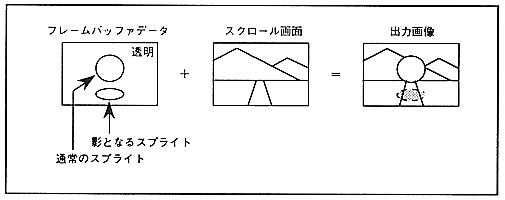

Shadow function is a function to add a shadow to the sprite itself or the scroll screen using the sprite. There are two types of shadow sprites, normal shadows and MSB shadows, depending on the data. MSB shadow can be used only when the sprite type is type 2-7. The shadow function is used only when the priority of the shadow sprite has the highest priority.
The shadow function is processed after the color calculation function and color offset function. The shadow function is shown in Figure 14.1.
Figure 14.1 Shadow function
